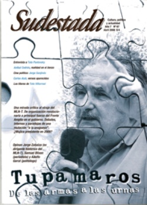

Buscar
El ejemplo de Sendic
Edición N° 67
Abril 2008
Revista bimensual
Comprar edición impresaSumario
- Tupamaros. De las armas a las urnas
- El ejemplo de Sendic
- Aníbal Cedrón. La redención del artista
- Toto Villarroel: hilos de la vida
- Eduardo Tato Pavlovsky: "No es posible ser un intelectual neutral"
- Carlos Aiub: una botella al mar
Compartir Articulo
No sería un mal ejercicio para la izquierda local, tan propensa a profundizar el estudio de procesos políticos tan disímiles del caso argentino como los de Venezuela o Brasil, detenerse por algunos momentos en la lectura del discurso del revolucionario uruguayo Raúl Sendic en el mítico acto en el Estadio Franzini (Montevideo), el 19 de diciembre de 1987. Allí, Sendic expone su concepción de Frente Grande: una fuerza articuladora de distintas corrientes políticas y partidarias, orgánicas y dispersas (que mantuvieran su identidad y autonomía política), sin exclusiones ni sectarismo, a partir del acuerdo en algunos puntos programáticos de relevancia crucial: no pago de la deuda externa, nacionalización de la banca, aumento de salarios y jubilaciones, reforma agraria, entre otros puntos. La idea del Frente Grande de Sendic (una obviedad necesaria: con ningún parentesco con su homónimo argentino de tiempo atrás) representaba un salto cualitativo en relación a la ya de por sí importante experiencia del Frente Amplio, creado en 1971, pero limitado entonces a ejercer su influencia en Montevideo y con la tendencia (que hoy se ha impuesto por sobre cualquier otro aspecto) a priorizar las alianzas policlasistas por encima de las convicciones revolucionarias. Pero el Frente Grande era el germen de un acuerdo de extraordinario valor. Lo concreto es que no existe un modelo de construcción más cercano al imaginario argentino que el uruguayo que defendía Sendic. Al menos, y más allá de las caracterizaciones que cada uno pueda desarrollar sobre el caso uruguayo, el tema merece un lugar para el debate.
¿Será posible imaginar, en el contexto argentino, un escenario de coordinación a nivel nacional de aquellos agrupamientos políticos y sociales que acuerden en una base programática y en mantener la independencia de clase? ¿Será imaginable sospechar que distintas fuerzas puedan debatir de forma fraterna y respetuosa, que puedan eludir los obstáculos sectarios y los dardos chicaneros de costumbre para intentar articular como hegemonía aquello que cada uno piense superador en cada momento?
Del mismo modo que vale rescatar de la experiencia de Tupamaros en Uruguay el proceso de las "mateadas" por los barrios, donde los guerrilleros derrotados, ahora en libertad, discutían con la gente para escuchar críticas y propuestas; vale la pena perder (o ganar) algo de tiempo en leer el discurso de Sendic en el Franzini, una pieza que ya pertenece a la historia de la izquierda latinoamericana.
Comentarios

Sudestada
El colectivo de Revista Sudestada esta integrado por Ignacio Portela, Hugo Montero, Walter Marini, Leandro Albani, Martín Latorraca, Pablo Fernández y Repo Bandini.
Articulos más vistos


LIBRERÍA SUDESTADA

Colección infantil

Distribuidora de Libros

Suscripción

Sudestada en URUGUAY

Otros articulos de esta edición
Eduardo Tato Pavlovsky: "No es posible ser un intelectual neutral"
Actor, autor, director y médico. Uno de los últimos caudillos del teatro y una de las personalidades más destacadas de ...
Tupamaros. De las armas a las urnas
Intentar definir el rumbo del gobierno del Frente Amplio hoy en Uruguay (¿progresista?, ¿socialdemócrata?, ¿continuista?) es un desafío que no ...
Aníbal Cedrón. La redención del artista
El pintor y escritor argentino Aníbal Cedrón discurre sobre las condiciones actuales de producción y las compara con aquellas que ...
Carlos Aiub: una botella al mar
El hallazgo de un viejo cuaderno con renglones es la punta del ovillo de esta historia. Sobreviviente del saqueo militar, ...
Toto Villarroel: hilos de la vida
La magia desborda el retablo. Los hilos se tensan y el Maese Elvio Toto Villarroel se larga en un camino ...